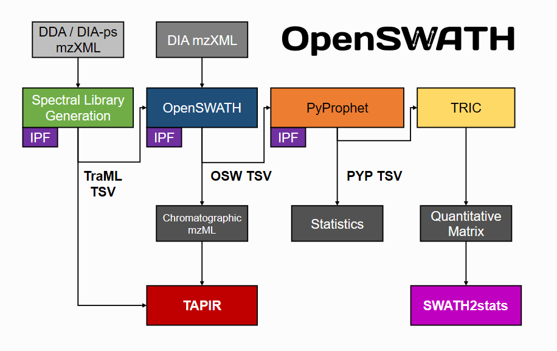

Software
OpenSWAH
The OpenSWATH Workflow enables targeted data analysis of data-independent acquisition (DIA) or SWATH-MS proteomic data. The main workflow consists of OpenSWATH, PyProphet, TRIC, IPF and TAPIR. This website provides documentation on installation and application of the tools.
The OpenSWATH Workflow
Installation
Docker
Docker is a flexible and popular container management platform. With only few steps, you can obtain a full OpenSWATH installation including all dependencies on Windows, macOS and Linux. The OpenSWATH docker container will continuously be updated to the latest development version. Users who just want to run the OpenSWATH workflow on their desktops can follow the instructions below to obtain an installation-free, always-updated workflow. It will run with nearly native speed on desktops, clusters and cloud environments.
Binaries
Precompiled or prepackaged versions of OpenMS, PyProphet and msproteomicstools are readily available for most supported platforms.
Binaries
The source code of OpenMS, PyProphet and msproteomicstools is provided on GitHub under the 3-clause BSD license. Please refer to the individual repositories for information regarding obtaining, compiling and installing the components.